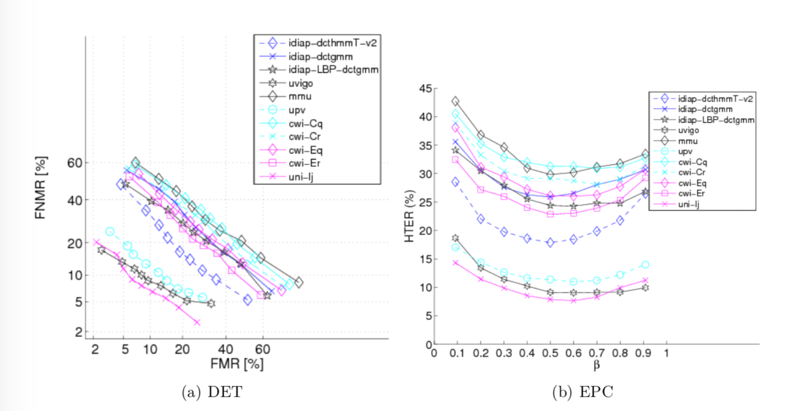

<!DOCTYPE html>
<html lang="zh-CN">
<head>
  <meta charset="UTF-8">
<meta name="viewport" content="width=device-width, initial-scale=1, maximum-scale=2">
<meta name="theme-color" content="#222">
<meta name="generator" content="Hexo 4.2.0">
  <link rel="apple-touch-icon" sizes="180x180" href="/images/apple-touch-icon-next.png">
  <link rel="icon" type="image/png" sizes="32x32" href="/images/favicon-32x32-next.png">
  <link rel="icon" type="image/png" sizes="16x16" href="/images/favicon-16x16-next.png">
  <link rel="mask-icon" href="/images/logo.svg" color="#222">

<link rel="stylesheet" href="/css/main.css">


<link rel="stylesheet" href="/lib/font-awesome/css/font-awesome.min.css">
  <link rel="stylesheet" href="/lib/pace/pace-theme-minimal.min.css">
  <script src="/lib/pace/pace.min.js"></script>


<script id="hexo-configurations">
  var NexT = window.NexT || {};
  var CONFIG = {
    hostname: new URL('http://yoursite.com').hostname,
    root: '/',
    scheme: 'Mist',
    version: '7.6.0',
    exturl: false,
    sidebar: {"position":"left","display":"post","padding":18,"offset":12,"onmobile":false},
    copycode: {"enable":true,"show_result":true,"style":null},
    back2top: {"enable":true,"sidebar":false,"scrollpercent":false},
    bookmark: {"enable":false,"color":"#222","save":"auto"},
    fancybox: false,
    mediumzoom: false,
    lazyload: false,
    pangu: false,
    comments: {"style":"tabs","active":null,"storage":true,"lazyload":false,"nav":null},
    algolia: {
      appID: '',
      apiKey: '',
      indexName: '',
      hits: {"per_page":10},
      labels: {"input_placeholder":"Search for Posts","hits_empty":"We didn't find any results for the search: ${query}","hits_stats":"${hits} results found in ${time} ms"}
    },
    localsearch: {"enable":false,"trigger":"auto","top_n_per_article":1,"unescape":false,"preload":false},
    path: '',
    motion: {"enable":true,"async":false,"transition":{"post_block":"fadeIn","post_header":"slideDownIn","post_body":"slideDownIn","coll_header":"slideLeftIn","sidebar":"slideUpIn"}}
  };
</script>

  <meta name="description" content="介绍生物特识别算法评估常用的评估类型、评估指标以及一些常见的图表。">
<meta property="og:type" content="article">
<meta property="og:title" content="生物特征识别评估指标">
<meta property="og:url" content="http://yoursite.com/2020/01/17/%E7%94%9F%E7%89%A9%E7%89%B9%E5%BE%81%E8%AF%86%E5%88%AB%E8%AF%84%E4%BC%B0%E6%8C%87%E6%A0%87/index.html">
<meta property="og:site_name" content="人间有味是清欢">
<meta property="og:description" content="介绍生物特识别算法评估常用的评估类型、评估指标以及一些常见的图表。">
<meta property="og:locale" content="zh_CN">
<meta property="og:image" content="http://yoursite.com/2020/01/17/%E7%94%9F%E7%89%A9%E7%89%B9%E5%BE%81%E8%AF%86%E5%88%AB%E8%AF%84%E4%BC%B0%E6%8C%87%E6%A0%87/det.png">
<meta property="og:image" content="http://yoursite.com/2020/01/17/%E7%94%9F%E7%89%A9%E7%89%B9%E5%BE%81%E8%AF%86%E5%88%AB%E8%AF%84%E4%BC%B0%E6%8C%87%E6%A0%87/cmc1.png">
<meta property="og:image" content="http://yoursite.com/2020/01/17/%E7%94%9F%E7%89%A9%E7%89%B9%E5%BE%81%E8%AF%86%E5%88%AB%E8%AF%84%E4%BC%B0%E6%8C%87%E6%A0%87/cmc.png">
<meta property="article:published_time" content="2020-01-17T07:30:31.000Z">
<meta property="article:modified_time" content="2020-01-23T10:38:57.235Z">
<meta property="article:author" content="QingHuan">
<meta property="article:tag" content="Biometric">
<meta property="article:tag" content="Metrics">
<meta name="twitter:card" content="summary">
<meta name="twitter:image" content="http://yoursite.com/2020/01/17/%E7%94%9F%E7%89%A9%E7%89%B9%E5%BE%81%E8%AF%86%E5%88%AB%E8%AF%84%E4%BC%B0%E6%8C%87%E6%A0%87/det.png">

<link rel="canonical" href="http://yoursite.com/2020/01/17/%E7%94%9F%E7%89%A9%E7%89%B9%E5%BE%81%E8%AF%86%E5%88%AB%E8%AF%84%E4%BC%B0%E6%8C%87%E6%A0%87/">


<script id="page-configurations">
  // https://hexo.io/docs/variables.html
  CONFIG.page = {
    sidebar: "",
    isHome: false,
    isPost: true
  };
</script>

  <title>生物特征识别评估指标 | 人间有味是清欢</title>
  


  <noscript>
  <style>
  .use-motion .brand,
  .use-motion .menu-item,
  .sidebar-inner,
  .use-motion .post-block,
  .use-motion .pagination,
  .use-motion .comments,
  .use-motion .post-header,
  .use-motion .post-body,
  .use-motion .collection-header { opacity: initial; }

  .use-motion .site-title,
  .use-motion .site-subtitle {
    opacity: initial;
    top: initial;
  }

  .use-motion .logo-line-before i { left: initial; }
  .use-motion .logo-line-after i { right: initial; }
  </style>
</noscript>

</head>

<body itemscope itemtype="http://schema.org/WebPage">
  <div class="container use-motion">
    <div class="headband"></div>

    <header class="header" itemscope itemtype="http://schema.org/WPHeader">
      <div class="header-inner"><div class="site-brand-container">
  <div class="site-meta">

    <div>
      <a href="/" class="brand" rel="start">
        <span class="logo-line-before"><i></i></span>
        <span class="site-title">人间有味是清欢</span>
        <span class="logo-line-after"><i></i></span>
      </a>
    </div>
  </div>

  <div class="site-nav-toggle">
    <div class="toggle" aria-label="切换导航栏">
      <span class="toggle-line toggle-line-first"></span>
      <span class="toggle-line toggle-line-middle"></span>
      <span class="toggle-line toggle-line-last"></span>
    </div>
  </div>
</div>


<nav class="site-nav">
  
  <ul id="menu" class="menu">
        <li class="menu-item menu-item-home">

    <a href="/" rel="section"><i class="fa fa-fw fa-home"></i>首页</a>

  </li>
        <li class="menu-item menu-item-archives">

    <a href="/archives/" rel="section"><i class="fa fa-fw fa-archive"></i>归档</a>

  </li>
  </ul>

</nav>
</div>
    </header>

    
  <div class="back-to-top">
    <i class="fa fa-arrow-up"></i>
    <span>0%</span>
  </div>


    <main class="main">
      <div class="main-inner">
        <div class="content-wrap">
          

          <div class="content">
            

  <div class="posts-expand">
      
  
  
  <article itemscope itemtype="http://schema.org/Article" class="post-block " lang="zh-CN">
    <link itemprop="mainEntityOfPage" href="http://yoursite.com/2020/01/17/%E7%94%9F%E7%89%A9%E7%89%B9%E5%BE%81%E8%AF%86%E5%88%AB%E8%AF%84%E4%BC%B0%E6%8C%87%E6%A0%87/">

    <span hidden itemprop="author" itemscope itemtype="http://schema.org/Person">
      <meta itemprop="image" content="/images/lover.jpeg">
      <meta itemprop="name" content="QingHuan">
      <meta itemprop="description" content="">
    </span>

    <span hidden itemprop="publisher" itemscope itemtype="http://schema.org/Organization">
      <meta itemprop="name" content="人间有味是清欢">
    </span>
      <header class="post-header">
        <h1 class="post-title" itemprop="name headline">
          生物特征识别评估指标
        </h1>

        <div class="post-meta">
            <span class="post-meta-item">
              <span class="post-meta-item-icon">
                <i class="fa fa-calendar-o"></i>
              </span>
              <span class="post-meta-item-text">发表于</span>

              <time title="创建时间：2020-01-17 15:30:31" itemprop="dateCreated datePublished" datetime="2020-01-17T15:30:31+08:00">2020-01-17</time>
            </span>
              <span class="post-meta-item">
                <span class="post-meta-item-icon">
                  <i class="fa fa-calendar-check-o"></i>
                </span>
                <span class="post-meta-item-text">更新于</span>
                <time title="修改时间：2020-01-23 18:38:57" itemprop="dateModified" datetime="2020-01-23T18:38:57+08:00">2020-01-23</time>
              </span>
            <span class="post-meta-item">
              <span class="post-meta-item-icon">
                <i class="fa fa-folder-o"></i>
              </span>
              <span class="post-meta-item-text">分类于</span>
                <span itemprop="about" itemscope itemtype="http://schema.org/Thing">
                  <a href="/categories/Biometric/" itemprop="url" rel="index">
                    <span itemprop="name">Biometric</span>
                  </a>
                </span>
            </span>

          
            <span class="post-meta-item" title="阅读次数" id="busuanzi_container_page_pv" style="display: none;">
              <span class="post-meta-item-icon">
                <i class="fa fa-eye"></i>
              </span>
              <span class="post-meta-item-text">阅读次数：</span>
              <span id="busuanzi_value_page_pv"></span>
            </span><br>
            <span class="post-meta-item" title="本文字数">
              <span class="post-meta-item-icon">
                <i class="fa fa-file-word-o"></i>
              </span>
                <span class="post-meta-item-text">本文字数：</span>
              <span>5.2k</span>
            </span>
            <span class="post-meta-item" title="阅读时长">
              <span class="post-meta-item-icon">
                <i class="fa fa-clock-o"></i>
              </span>
                <span class="post-meta-item-text">阅读时长 &asymp;</span>
              <span>5 分钟</span>
            </span>

        </div>
      </header>

    
    
    
    <div class="post-body" itemprop="articleBody">

      
        <p>介绍生物特识别算法评估常用的<strong>评估类型</strong>、<strong>评估指标</strong>以及一些常见的图表。</p>
<a id="more"></a>
<h2 id="评估的种类"><a href="#评估的种类" class="headerlink" title="评估的种类"></a>评估的种类</h2><p>生物特征识别系统的评估，依据评估场景和侧重点的不同，可以分为以下三大类：</p>
<ul>
<li>技术评估(Technology evaluation)：评估生物特征系统系统某个组件的性能。输出性能数据，实验通常可重复。</li>
<li>情境评估(scenario evaluation)：特定应用情境下，生物特征性能的评估。显示系统在特定情境下，需要增强的部分。</li>
<li>运行评估(operational evaluation)：系统实际运行时候的评估。</li>
</ul>
<h2 id="生物特征识别技术应用"><a href="#生物特征识别技术应用" class="headerlink" title="生物特征识别技术应用"></a>生物特征识别技术应用</h2><ul>
<li><p>核验(verification)：对用户提供的生物特征，通过比对<strong>一个</strong>生物特征模板(templates)进行<strong>确认工作</strong>。如，人脸核验的安检闸机，通过比对<br>身份中的人像和摄像头拍到的人像是否是同一个人，来确定人证是否合一。<strong>俗称1比1</strong>。</p>
</li>
<li><p>识别(identification)：对用户提供的生物特征，通过比对数据库中的<strong>所有</strong>生物特征模板(templates)，在多个个体之中<strong>辨认</strong>个体。<strong>俗称1比N</strong>。</p>
<ul>
<li>闭集合(close-set)识别：待识别的生物特征，一定在数据库中存在；</li>
<li>开集合(open-set)识别：待识别的生物特征，有可能在数据库中，也可能不在数据库中；如：观察列表(watchlist)、逆确认(negative identification),<br>即确认个体之前没有被录入到数据库中。</li>
</ul>
</li>
</ul>
<h2 id="评估指标和图表"><a href="#评估指标和图表" class="headerlink" title="评估指标和图表"></a>评估指标和图表</h2><h3 id="核验（Verification）"><a href="#核验（Verification）" class="headerlink" title="核验（Verification）"></a>核验（Verification）</h3><p>对于核验的情形，常用的图表依据数据集合的设置不同，可以分为两类：</p>
<ul>
<li>Posteriori：只是用一个单一的匹配评分数据集；</li>
<li>Priori: 使用两个评分数据集合：development data set用于根据不同侧重目标决策合适的阈值，evaluation set用于评价系统性能。</li>
</ul>
<h4 id="适用于核验任务的评估指标"><a href="#适用于核验任务的评估指标" class="headerlink" title="适用于核验任务的评估指标"></a>适用于核验任务的评估指标</h4><ul>
<li><p>FMR (False Match Rate)：错误匹配率的经验估计，即系统把一个“冒名顶替者”（imposter)，错误的判断为“真实用户”（genuine user)的频率。</p>
</li>
<li><p>FNMR (False No-Match Rate)：错误非匹配率的经验估计，即系统把一个“真实用户”，错误的判断为“冒名顶替者的频率。</p>
</li>
<li><p>EER (Equal Error Rate)：FMR和FNMR相等时的值。</p>
</li>
<li><p>FAR (False Acceptance Rate) / FRR (False Rejection Rate)：错误接受率、错误拒绝率。含义分别与错误匹配率、错误非匹配率一致，也经常混淆使用，<br>然而，这两组指标还是有差别的，<strong>错误接受率、错误拒绝率通常是用在系统级别的评估上</strong>， <strong>错误匹配率、错误非匹配率通常用在算法的评估上</strong>。如系统的<br>样本获取木块有错误致使系统的比对算法没有在某些样本上比对、或系统的传感器没有采集某些样本，会引发错误拒绝率和错误匹配率。</p>
</li>
<li><p>TAR (True Acceptance Rate)：$TAR = 1 - FAR$。</p>
</li>
<li><p>WER (Weighted Error Rate)：定义为FNMR(FRR)和FMR(FAR)之间的加权和。</p>
</li>
</ul>
<h4 id="适用于核验任务的图表"><a href="#适用于核验任务的图表" class="headerlink" title="适用于核验任务的图表"></a>适用于核验任务的图表</h4><ul>
<li><p>ROC (Receiver Operating Characteristic) ：<strong>Y轴：FNMR，X轴：FMR</strong>，或者，<strong>Y轴：FRR，X轴：FAR</strong>，<br>或者，<strong>Y轴：TAR，X轴：FAR</strong>。</p>
</li>
<li><p>DET (Detection Error Trad-off)：类似于ROC曲线，不同的是坐标轴的尺度使用对数尺度，方便显示更精细的坐标区域。</p>
</li>
<li><p>EPC (Expected Performance Curve)：是一类先验图表，相对于ROC曲线和DET曲线有如下特点：</p>
<ul>
<li>使用FMR作为性能指标，观察FNMR。即固定FMR，观察FNMR的表现；</li>
<li>使用FNMR作为性能指标，观察FMR。即固定FNMR，观察FMR的表现；</li>
<li>使用WER作为性能指标，观察HTER。</li>
</ul>
</li>
</ul>
<p></p>
<blockquote>
<p>核验常用的评价指标图</p>
</blockquote>
<h3 id="识别"><a href="#识别" class="headerlink" title="识别"></a>识别</h3><h4 id="闭集"><a href="#闭集" class="headerlink" title="闭集"></a>闭集</h4><p>Rank-k: 正确的候选出现在排序列表的位置，称为Rank-k;</p>
<p>CMC (Cumulative Match Characteristic)：绘制<code>Rank-k</code>的识别率，即以序数k为x轴，rank-k的识别准确率为y轴。如下图：</p>
<p></p>
<blockquote>
<p>比集合的CMC图</p>
</blockquote>
<h4 id="开集"><a href="#开集" class="headerlink" title="开集"></a>开集</h4><p>开集合的识别常有的两类架构：1）遍历所有数据库中的样本进行比对；2）基于检索的识别方法；<br>人像、虹膜识别常常使用遍历所有数据库样本的方式，通常使用并行的算法进行加速；<br>基于检索的识别方法，通常会有一系列的过滤器组成pip-line，通常识别精度和需要的时间随着pip-line递增；如基于细节点的指纹识别（minutiae-bbased）属于此类方法；</p>
<p>基于检索的识别系统，通常由检测（召回）和识别两个部分组成。显然，通过降低检测（召回）的阈值，可以增加识别的候选，可以提升识别的效果<br>但是，由于候选列表的增大，误报率也会增大。开集合识别常用的度量指标有</p>
<ul>
<li><p>DIR（Detection and Identification Rate): 正确的比中候选在候选列表中的概率</p>
</li>
<li><p>FAR (False Alarm Rate)：错误报警率，即系统比中的是错误的概率，或则测试值不在Watchlist中的概率；</p>
</li>
</ul>
<p>开集合识别任务，常绘制Y轴：DIR，X轴：FAR，作为该类任务的ROC曲线。</p>
<p></p>
<blockquote>
<p>开集合的CMC图，每条曲线对应一个不同的FAR下的CMC，最上面的曲线对应$FAR = 1$</p>
</blockquote>
<h2 id="指标的计算公式"><a href="#指标的计算公式" class="headerlink" title="指标的计算公式"></a>指标的计算公式</h2><h3 id="符号说明"><a href="#符号说明" class="headerlink" title="符号说明"></a>符号说明</h3><h4 id="数据集合"><a href="#数据集合" class="headerlink" title="数据集合"></a>数据集合</h4><ul>
<li>Gallery：系统数据库中已经存储的个体的集合，记为：$\mathcal G$;</li>
<li>Cohort: 与gallery set相对，系统数据库之外的其他个体的集合，记为：$\mathcal C$;</li>
<li>Probe: 测试集合，其中的样本可能在Gdallery中，也可能不在，记为：$\mathcal B$;</li>
</ul>
<p>上述三个集合中的元素分别记为：$g \in \mathcal G$, $c \in \mathcal C$, $b \in \mathcal B$。根据不同的上下文，可以表示也个样本，也可以表示该样本的特征。如，$g, b, c \in \mathcal X$，其中，$\mathcal X$是特征空间；</p>
<h4 id="识别函数"><a href="#识别函数" class="headerlink" title="识别函数"></a>识别函数</h4><p>使用映射$id: \mathcal X \to \mathcal U$，表示从生物特征到个体的识别函数。如：<br>$id(g)$表示一个在Gallery中的个体（身份），通常是这个个体在数据库中的主键。$\mathcal U_{\mathcal G}$，$\mathcal U_{\mathcal C}$, $\mathcal U_{\mathcal B}$分别表示Galley，Cohort，Probe中的个体（身份）集合。通常有$\mathcal U_{\mathcal G} \cap \mathcal U_{\mathcal B}$。</p>
<h4 id="相似度比分"><a href="#相似度比分" class="headerlink" title="相似度比分"></a>相似度比分</h4><p>$s = s(g, b)$表示Galley中的样本$g$，和Probe中的样本$b$的比分。通常意义下，s的值越大，表示越相似。</p>
<h4 id="特定用户类别条件下的比分集合（User-specific-class-conditinal-score-set）"><a href="#特定用户类别条件下的比分集合（User-specific-class-conditinal-score-set）" class="headerlink" title="特定用户类别条件下的比分集合（User-specific class-conditinal score set）"></a>特定用户类别条件下的比分集合（User-specific class-conditinal score set）</h4><p>比分可以根据是否是真正的匹配，分为两大类：<strong>匹配评分</strong>和<strong>非匹配评分</strong>。记$U_{\mathcal G}$, $q \in U_{\mathcal B}$，分别表示Gallery中的个体（t for template)和Probe中的个体（q for query）如果$t = q$，（表示是同一个个体）则称比分为匹配评分（match score），否则称为非匹配评分（no match score）。使用</p>
<script type="math/tex; mode=display">\mathcal S_{tq} = {s(g,b) | id(g) = t, id(b) = q, \forall g \in \mathcal G, \forall \in \mathcal B}</script><p>使用$\mathcal S_t^1 \equiv \mathcal S_{tt}$表示特定用户$t \in \mathcal U_{mathcal G}$的所有匹配评分组成的集合，（在上述<br>公式中第二个角标$q = t$。）<br>使用</p>
<script type="math/tex; mode=display">\mathcal S_t^0 \equiv \cup_{q \neq t, q \in \mathcal U_{\mathcal G}} \mathcal S_{tq}</script><p>是所有的非匹配评分。</p>
<h4 id="聚合情形类别条件下的比分集合（Aggregated-class-conditinal-score-set）"><a href="#聚合情形类别条件下的比分集合（Aggregated-class-conditinal-score-set）" class="headerlink" title="聚合情形类别条件下的比分集合（Aggregated class-conditinal score set）"></a>聚合情形类别条件下的比分集合（Aggregated class-conditinal score set）</h4><p>使用特定用户评分可以定义聚合评分：即所有的特定用户评分组成的集合。定义为</p>
<script type="math/tex; mode=display">\mathcal S_*^0 \equiv \cup_{t \in \mathcal U} \mathcal S_t^0</script><p>和</p>
<script type="math/tex; mode=display">\mathcal S_*^0 \equiv \cup_{t \in \mathcal U} \mathcal S_t^1</script><p>分别表示所有的匹配评分集合和非评分集合。</p>
<h4 id="Probe集合中的Gallery集合和非Gallery集合"><a href="#Probe集合中的Gallery集合和非Gallery集合" class="headerlink" title="Probe集合中的Gallery集合和非Gallery集合"></a>Probe集合中的Gallery集合和非Gallery集合</h4><p>在开放集合识别的情形下，需要区分Gallery和非Gallery集合$\mathcal B^i \subset \mathcal B, i \in {1, 0}$，即：</p>
<script type="math/tex; mode=display">\mathcal B^1 \equiv {b \in \mathcal B | \exists g \in \mathcal G, id(b) = id(g)}</script><script type="math/tex; mode=display">
\mathcal B^0 \equiv {b \in \mathcal B | \nexists g \in \mathcal G, id(b) = id(g)}</script><p>注意在闭集识别的情形下，$\mathcal B^0$。</p>
<h2 id="指标计算公式"><a href="#指标计算公式" class="headerlink" title="指标计算公式"></a>指标计算公式</h2><h3 id="FNMR和FMR"><a href="#FNMR和FMR" class="headerlink" title="FNMR和FMR"></a>FNMR和FMR</h3><script type="math/tex; mode=display">FNMR(\Delta) = \frac{\lvert\{s|s \in \mathcal S_*^1, s \lt \Delta\} \vert}{\lvert \mathcal S_*^1 \rvert}</script><script type="math/tex; mode=display">FMR(\Delta) = \frac{\lvert \{s | s \in \mathcal S_*^0, s \geqslant \Delta\} \rvert}{\lvert \mathcal S_*^0 \rvert}</script><p>其中，</p>
<script type="math/tex; mode=display">\mathcal S_*^1</script><p>和</p>
<script type="math/tex; mode=display">\mathcal S_*^0</script><p>分别表示匹配的对子(comparisons)的比分集合和不匹配对子的比分集合。$\Delta$表示阈值(threshold)。<br>$FNMR$是关于阈值$\Delta$的增<br>函数，$FMR$是关于阈值$\Delta$的减函数。</p>
<h3 id="EER、HTER和WER"><a href="#EER、HTER和WER" class="headerlink" title="EER、HTER和WER"></a>EER、HTER和WER</h3><script type="math/tex; mode=display">EER = FMR(\Delta_*) = FNMR(\Delta_*)</script><p>其中</p>
<script type="math/tex; mode=display">\Delta_* = \arg\min_{\Delta}(\lvert FMR(\Delta) - FNMR(\Delta) \rvert)</script><script type="math/tex; mode=display">HTER(\Delta) = \frac{1}{2} (FNMR(\Delta) + FMR(\Delta))</script><script type="math/tex; mode=display">WER_{\beta}(\Delta) = (1 - \beta)FNMR(\Delta) + (\beta)FMR(\Delta)</script><p>其中，$\beta \in [0, 1]$调整FMR和FNMR对于WER的贡献值。</p>
<h3 id="Identification-Rank-IR"><a href="#Identification-Rank-IR" class="headerlink" title="Identification Rank IR"></a>Identification Rank IR</h3><blockquote>
<p>Is the correct answer in the top $k$ comparisons?</p>
</blockquote>
<p>在比集合的识别场景下，回答上述问题的做法是：对给定的probe和gallery中模版的相似对比分进行降序排序，然后计算每个$b \in \mathcal B$的比中序数$rank(b)$即，在第$k$个排序比中该probe。<br>则，序数$k$的识别率$IR(K)$计算如下：</p>
<script type="math/tex; mode=display">IR(k) = \frac{\lvert \{ b | rank(b) \leqslant k, \forall b \in \mathcal B \} \rvert}{\lvert \mathcal U_{\mathcal B} \rvert}</script><p>由于$rank(k) \in [1, \lvert \mathcal U_{\mathcal G} \rvert]$，所以$IR(k) \in [0, 1]$。</p>
<h3 id="DIR、FAR"><a href="#DIR、FAR" class="headerlink" title="DIR、FAR"></a>DIR、FAR</h3><p>DIR描述系统或者算法$rank k$的正确识别率，定义如下：</p>
<script type="math/tex; mode=display">DIR(\Delta, k) = \frac{\lvert \{s(g,b) | s(g,b), \forall g \in \mathcal G, \forall b \in \mathcal B^1, s(g,b) \geqslant \Delta, rank(b) \leqslant k \}\rvert}{\lvert \mathcal B^1 \rvert}</script><p>DIR同时考虑对子的相似度评分$s(g, b)$和序数$rank(b)$，如果不考虑序数，DIR退化为$1 - FNMR(\Delta)$。如果仅考虑评分，则相当于计算闭集上的表现。因此，DIR混合了Verification和Identification。</p>
<p>FAR，False Alarm Rate，错误报警率，定义如下：</p>
<script type="math/tex; mode=display">FAR(\Delta, k) = \frac{\lvert\{ s(g,b) | s(g,b), \forall g \in \mathcal G, \forall b \in \mathcal B^0, s(g,b) \leqslant \Delta\}\rvert}{\lvert \mathcal B^0 \rvert}</script>
    </div>

    
    
    

      <footer class="post-footer">
          <div class="post-tags">
              <a href="/tags/Biometric/" rel="tag"># Biometric</a>
              <a href="/tags/Metrics/" rel="tag"># Metrics</a>
          </div>

        


        
    <div class="post-nav">
      <div class="post-nav-item">
    <a href="/2020/01/09/C%E8%AF%AD%E8%A8%80%E5%BC%82%E5%B8%B8%E5%AE%9E%E7%8E%B0/" rel="prev" title="C语言异常实现">
      <i class="fa fa-chevron-left"></i> C语言异常实现
    </a></div>
      <div class="post-nav-item"></div>
    </div>
      </footer>
    
  </article>
  
  
  

  </div>


          </div>
          

<script>
  window.addEventListener('tabs:register', () => {
    let activeClass = CONFIG.comments.activeClass;
    if (CONFIG.comments.storage) {
      activeClass = localStorage.getItem('comments_active') || activeClass;
    }
    if (activeClass) {
      let activeTab = document.querySelector(`a[href="#comment-${activeClass}"]`);
      if (activeTab) {
        activeTab.click();
      }
    }
  });
  if (CONFIG.comments.storage) {
    window.addEventListener('tabs:click', event => {
      if (!event.target.matches('.tabs-comment .tab-content .tab-pane')) return;
      let commentClass = event.target.classList[1];
      localStorage.setItem('comments_active', commentClass);
    });
  }
</script>

        </div>
          
  
  <div class="toggle sidebar-toggle">
    <span class="toggle-line toggle-line-first"></span>
    <span class="toggle-line toggle-line-middle"></span>
    <span class="toggle-line toggle-line-last"></span>
  </div>

  <aside class="sidebar">
    <div class="sidebar-inner">

      <ul class="sidebar-nav motion-element">
        <li class="sidebar-nav-toc">
          文章目录
        </li>
        <li class="sidebar-nav-overview">
          站点概览
        </li>
      </ul>

      <!--noindex-->
      <div class="post-toc-wrap sidebar-panel">
          <div class="post-toc motion-element"><ol class="nav"><li class="nav-item nav-level-2"><a class="nav-link" href="#评估的种类"><span class="nav-number">1.</span> <span class="nav-text">评估的种类</span></a></li><li class="nav-item nav-level-2"><a class="nav-link" href="#生物特征识别技术应用"><span class="nav-number">2.</span> <span class="nav-text">生物特征识别技术应用</span></a></li><li class="nav-item nav-level-2"><a class="nav-link" href="#评估指标和图表"><span class="nav-number">3.</span> <span class="nav-text">评估指标和图表</span></a><ol class="nav-child"><li class="nav-item nav-level-3"><a class="nav-link" href="#核验（Verification）"><span class="nav-number">3.1.</span> <span class="nav-text">核验（Verification）</span></a><ol class="nav-child"><li class="nav-item nav-level-4"><a class="nav-link" href="#适用于核验任务的评估指标"><span class="nav-number">3.1.1.</span> <span class="nav-text">适用于核验任务的评估指标</span></a></li><li class="nav-item nav-level-4"><a class="nav-link" href="#适用于核验任务的图表"><span class="nav-number">3.1.2.</span> <span class="nav-text">适用于核验任务的图表</span></a></li></ol></li><li class="nav-item nav-level-3"><a class="nav-link" href="#识别"><span class="nav-number">3.2.</span> <span class="nav-text">识别</span></a><ol class="nav-child"><li class="nav-item nav-level-4"><a class="nav-link" href="#闭集"><span class="nav-number">3.2.1.</span> <span class="nav-text">闭集</span></a></li><li class="nav-item nav-level-4"><a class="nav-link" href="#开集"><span class="nav-number">3.2.2.</span> <span class="nav-text">开集</span></a></li></ol></li></ol></li><li class="nav-item nav-level-2"><a class="nav-link" href="#指标的计算公式"><span class="nav-number">4.</span> <span class="nav-text">指标的计算公式</span></a><ol class="nav-child"><li class="nav-item nav-level-3"><a class="nav-link" href="#符号说明"><span class="nav-number">4.1.</span> <span class="nav-text">符号说明</span></a><ol class="nav-child"><li class="nav-item nav-level-4"><a class="nav-link" href="#数据集合"><span class="nav-number">4.1.1.</span> <span class="nav-text">数据集合</span></a></li><li class="nav-item nav-level-4"><a class="nav-link" href="#识别函数"><span class="nav-number">4.1.2.</span> <span class="nav-text">识别函数</span></a></li><li class="nav-item nav-level-4"><a class="nav-link" href="#相似度比分"><span class="nav-number">4.1.3.</span> <span class="nav-text">相似度比分</span></a></li><li class="nav-item nav-level-4"><a class="nav-link" href="#特定用户类别条件下的比分集合（User-specific-class-conditinal-score-set）"><span class="nav-number">4.1.4.</span> <span class="nav-text">特定用户类别条件下的比分集合（User-specific class-conditinal score set）</span></a></li><li class="nav-item nav-level-4"><a class="nav-link" href="#聚合情形类别条件下的比分集合（Aggregated-class-conditinal-score-set）"><span class="nav-number">4.1.5.</span> <span class="nav-text">聚合情形类别条件下的比分集合（Aggregated class-conditinal score set）</span></a></li><li class="nav-item nav-level-4"><a class="nav-link" href="#Probe集合中的Gallery集合和非Gallery集合"><span class="nav-number">4.1.6.</span> <span class="nav-text">Probe集合中的Gallery集合和非Gallery集合</span></a></li></ol></li></ol></li><li class="nav-item nav-level-2"><a class="nav-link" href="#指标计算公式"><span class="nav-number">5.</span> <span class="nav-text">指标计算公式</span></a><ol class="nav-child"><li class="nav-item nav-level-3"><a class="nav-link" href="#FNMR和FMR"><span class="nav-number">5.1.</span> <span class="nav-text">FNMR和FMR</span></a></li><li class="nav-item nav-level-3"><a class="nav-link" href="#EER、HTER和WER"><span class="nav-number">5.2.</span> <span class="nav-text">EER、HTER和WER</span></a></li><li class="nav-item nav-level-3"><a class="nav-link" href="#Identification-Rank-IR"><span class="nav-number">5.3.</span> <span class="nav-text">Identification Rank IR</span></a></li><li class="nav-item nav-level-3"><a class="nav-link" href="#DIR、FAR"><span class="nav-number">5.4.</span> <span class="nav-text">DIR、FAR</span></a></li></ol></li></ol></div>
      </div>
      <!--/noindex-->

      <div class="site-overview-wrap sidebar-panel">
        <div class="site-author motion-element" itemprop="author" itemscope itemtype="http://schema.org/Person">
    
  <p class="site-author-name" itemprop="name">QingHuan</p>
  <div class="site-description" itemprop="description"></div>
</div>
<div class="site-state-wrap motion-element">
  <nav class="site-state">
      <div class="site-state-item site-state-posts">
          <a href="/archives/">
        
          <span class="site-state-item-count">4</span>
          <span class="site-state-item-name">日志</span>
        </a>
      </div>
      <div class="site-state-item site-state-categories">
            <a href="/categories/">
        <span class="site-state-item-count">3</span>
        <span class="site-state-item-name">分类</span></a>
      </div>
      <div class="site-state-item site-state-tags">
            <a href="/tags/">
        <span class="site-state-item-count">5</span>
        <span class="site-state-item-name">标签</span></a>
      </div>
  </nav>
</div>


      </div>

    </div>
  </aside>
  <div id="sidebar-dimmer"></div>


      </div>
    </main>

    <footer class="footer">
      <div class="footer-inner">
        

<div class="copyright">
  
  &copy; 
  <span itemprop="copyrightYear">2020</span>
  <span class="with-love">
    <i class="fa fa-user"></i>
  </span>
  <span class="author" itemprop="copyrightHolder">QingHuan</span>
    <span class="post-meta-divider">|</span>
    <span class="post-meta-item-icon">
      <i class="fa fa-area-chart"></i>
    </span>
    <span title="站点总字数">15k</span>
    <span class="post-meta-divider">|</span>
    <span class="post-meta-item-icon">
      <i class="fa fa-coffee"></i>
    </span>
    <span title="站点阅读时长">14 分钟</span>
</div>
  <div class="powered-by">由 <a href="https://hexo.io/" class="theme-link" rel="noopener" target="_blank">Hexo</a> 强力驱动 v4.2.0
  </div>
  <span class="post-meta-divider">|</span>
  <div class="theme-info">主题 – <a href="https://mist.theme-next.org/" class="theme-link" rel="noopener" target="_blank">NexT.Mist</a> v7.6.0
  </div>

        
<div class="busuanzi-count">
  <script async src="https://busuanzi.ibruce.info/busuanzi/2.3/busuanzi.pure.mini.js"></script>
    <span class="post-meta-item" id="busuanzi_container_site_uv" style="display: none;">
      <span class="post-meta-item-icon">
        <i class="fa fa-user"></i>
      </span>
      <span class="site-uv" title="总访客量">
        <span id="busuanzi_value_site_uv"></span>
      </span>
    </span>
    <span class="post-meta-divider">|</span>
    <span class="post-meta-item" id="busuanzi_container_site_pv" style="display: none;">
      <span class="post-meta-item-icon">
        <i class="fa fa-eye"></i>
      </span>
      <span class="site-pv" title="总访问量">
        <span id="busuanzi_value_site_pv"></span>
      </span>
    </span>
</div>


      </div>
    </footer>
  </div>

  
  <script src="/lib/anime.min.js"></script>
  <script src="/lib/velocity/velocity.min.js"></script>
  <script src="/lib/velocity/velocity.ui.min.js"></script>

<script src="/js/utils.js"></script>

<script src="/js/motion.js"></script>


<script src="/js/schemes/muse.js"></script>


<script src="/js/next-boot.js"></script>


  


  

  
      
<script type="text/x-mathjax-config">

  MathJax.Hub.Config({
    tex2jax: {
      inlineMath: [ ['$', '$'], ['\\(', '\\)'] ],
      processEscapes: true,
      skipTags: ['script', 'noscript', 'style', 'textarea', 'pre', 'code']
    },
    TeX: {
      equationNumbers: {
        autoNumber: 'AMS'
      }
    }
  });

  MathJax.Hub.Register.StartupHook('TeX Jax Ready', function() {
    MathJax.InputJax.TeX.prefilterHooks.Add(function(data) {
      if (data.display) {
        var next = data.script.nextSibling;
        while (next && next.nodeName.toLowerCase() === '#text') {
          next = next.nextSibling;
        }
        if (next && next.nodeName.toLowerCase() === 'br') {
          next.parentNode.removeChild(next);
        }
      }
    });
  });

  MathJax.Hub.Queue(function() {
    var all = MathJax.Hub.getAllJax(), i;
    for (i = 0; i < all.length; i += 1) {
      element = document.getElementById(all[i].inputID + '-Frame').parentNode;
      if (element.nodeName.toLowerCase() == 'li') {
        element = element.parentNode;
      }
      element.classList.add('has-jax');
    }
  });
</script>
<script>
  NexT.utils.getScript('//cdn.jsdelivr.net/npm/mathjax@2/MathJax.js?config=TeX-AMS-MML_HTMLorMML', () => {
    MathJax.Hub.Typeset();
  }, window.MathJax);
</script>

    

  

</body>
</html>
